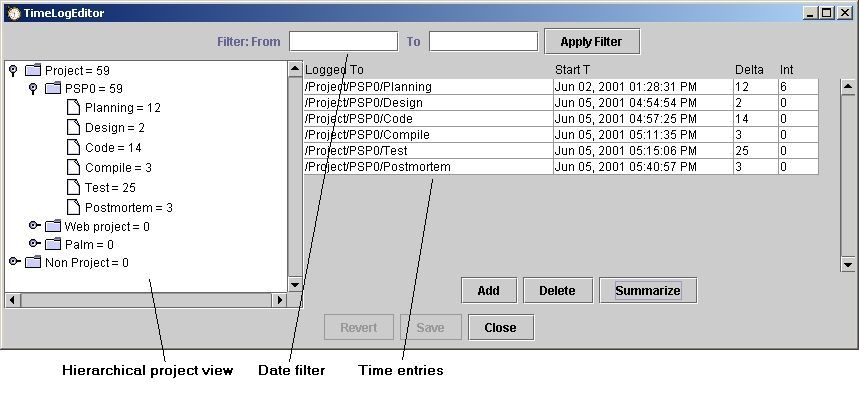

You can use the time log editor to correct mistakes you might make when timing your activities.

The left pane shows the current project hierarchy. Picking various branches on the hierarchy will limit the time entries displayed to just those on the branch chosen.
The two entries on the top labeled filter provide a date filtering on the time entries display. The format of the date entry depends upon Java localization settings, which can be overridden by an entry in the configuration file.
To change data in the time entries, just pick on the element that you would like to change. The elements in the time entries pane are editable. The "Logged To" column shows the process phase to which the time was logged. These entries should NOT be edited. The editor will replace any changes with the original entries if they are accidentally changed. The "Start T" column shows the start time for the activity. The "Delta" column shows the length of time spent in the activity. The "Int" column shows the amount of time that the given activity was interrupted.
The Add and Delete buttons allow the addition and deletion of time entries.
The Save and Revert buttons will save the changes or revert the entries to their previous values.
The Summarize button will collapse all time entries that were logged to the same process phase into one entry. The Dashboard will create new entries each time that it starts recording time in a given process phase (i.e. when a process phase is left and then returned to again for more time measurement). This function will allow you to collaspe all the duplicates.